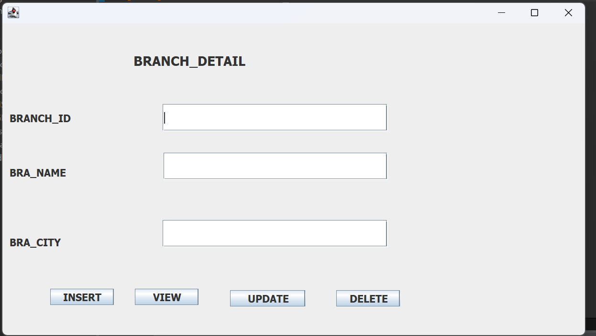
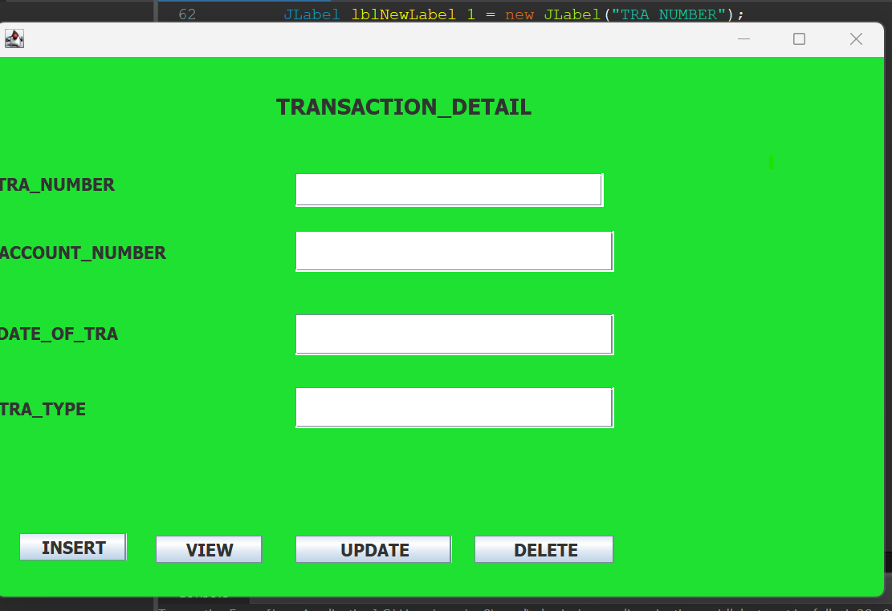
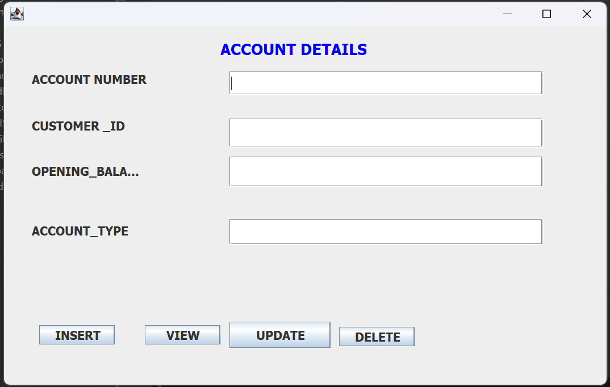

- DATABASE
Database name used: ONLINE BANKING SYSTEM.
- Tables
- USER TABLE Table
- CUSTOMER TABLE
- CARD TABLE
- TRANSACTION TABLE
- ACCOUNT TABLE
- BRANCH TABLE
- Attributes
- JAVA
- Description
- INTRODUCTION
- JAVA PROGRAMMING
- The Java programming environment consists of several components:
- The steps involved in establishing connectivity using JDBC typically include:
- Import JDBC Packages:
- Load and Register the JDBC Driver:
Use `Class.forName( )` to dynamically load and register the JDBC driver for the specific database you're connecting to. This step is necessary to inform the DriverManager about the database driver.
```java Class.forName("com.mysql.cj.jdbc.Driver");
``` - Create a Connection:
- Create a Statement:
- Execute SQL Queries:
- Process Results:
- Close Resources:
- Forms and Images
The User table in the database of an online banking system is a crucial component that stores essential user information for account management and security purposes. Here is a detailed description of the User table structure based on the provided sources.
This CUSTOMER table in the customer table and it will be created by the user, and it will be accessed by the user who is already in the database .
card table database structure This table Stores details or information about the customer providing the cadr detail, including card_id(int)as primary key , card_name, expiry date and card type
Transaction table in a database for an online banking system typically includes essential fields to record financial transactions accurately. Transaction Table Fields TransactionID, A unique identifier for each transaction. AccountID, The account associated with the transaction. Type, Indicates the type of transaction (e.g., deposit, withdrawal, transfer). Amount, The monetary value involved in the transaction.
The Account table in a database for an online banking system typically stores crucial information related to bank accounts, customers, and transactions. Here is an overview of the Account table structure based on the provided sources: Account Table Fields, AccountID, AS PRIMARY KEY. CustomerID,as foreign key. Type, (e.g., savings, checking).
The Branch table in a database for an online banking system typically stores information related to bank branches, including details such as branch names, locations, and assets. Here is an overview of the Branch table structure based on the provided sources: Branch Table Fields, BranchName, Name of the bank branch. BranchCity, City where the branch is located.
Attributes of Ccustome table:
fname, lname: The columns which are represents first name and last name of customer.
phone: The column which are represents telephone number of user.
e_mail: The column which are represents or store email of user.
Attributes of card Table Here are the descriptions or purposes of the attributes/columns used in coffee varieties table:card name: The columns which are represents name of card.
card number: The column which are represents card number.
expiry date: The column which are represents when card will be expiry.
Attributes of transaction Here are the descriptions or purposes of the attributes/columns used in farmers table:tra_id(int) : The columns which are represents primary key as usual.
tra_number(varchar) : The column which are represents number of transaction
tra_type: The column which are represents the type of transaction.
Java is a widely used, high-level, object-oriented programming language known for its portability, reliability, and versatility. Here's a detailed description:
Object-Oriented: Java is fundamentally object-oriented, meaning it revolves around the concept of classes and objects. Objects encapsulate data and behavior, promoting modular, reusable, and maintainable code.
Platform-Independent: One of Java's most significant features is its platform independence. Java programs are compiled into bytecode, which can run on any device with a Java Virtual Machine (JVM) installed. This "write once, run anywhere" capability makes Java highly portable across different operating systems and hardware architectures.
Robust and Secure: Java is designed with a strong emphasis on reliability and security. It incorporates features like automatic memory management through garbage collection, exception handling, and strict type checking to ensure robustness. Additionally, Java's bytecode verification process enhances security by preventing unauthorized code execution.
Multi-threaded: Java supports multithreading, allowing concurrent execution of multiple threads within a single program. This feature facilitates the development of responsive and scalable applications, making Java suitable for building server-side applications, graphical user interfaces (GUIs), and multimedia applications.
Rich Standard Library: Java comes with an extensive standard library (Java API) that provides ready-to-use classes and methods for various tasks. The Java API covers areas such as input/output (I/O), networking, database connectivity, graphical user interface (GUI) development, and more. This rich set of libraries simplifies development and accelerates the creation of Java applications.
Community Support and Ecosystem: Java benefits from a large and active community of developers, enthusiasts, and organizations. This vibrant ecosystem contributes to the continuous evolution of the language through updates, frameworks, libraries, and tools. Java's popularity and widespread adoption ensure ample resources, documentation, and support available for developers.
Used Across Diverse Applications: Java finds applications in a wide range of domains, including web development, enterprise software, mobile app development (Android), scientific computing, financial services, and more. Its versatility and scalability make it a popular choice for building large-scale, mission-critical systems.
Java Development Kit (JDK): Provides tools for developing Java applications, including the Java compiler (javac), the Java Virtual Machine (JVM), and various utilities.
Integrated Development Environments (IDEs): Software tools that facilitate Java development by providing features such as code editing, debugging, and project management. Popular Java IDEs include Eclipse, IntelliJ IDEA, and NetBeans.
Java Runtime Environment (JRE): Includes the JVM and libraries necessary for running Java applications. It allows users to execute Java programs without needing the development tools provided by the JDK.
Java Application Programming Interface (API): A collection of pre-written Java classes and interfaces organized into packages. The Java API provides a vast array of functionality for tasks such as input/output operations, networking, GUI development, and more.
JDBC, which stands for Java Database Connectivity, is a Java API that allows Java applications to interact with relational databases. It provides a standard interface for connecting to relational databases and executing SQL queries. JDBC enables Java applications to perform database operations such as inserting, updating, deleting, and querying data.
Import the necessary JDBC packages in your Java program. These packages include `java.sql` and specific database driver packages.
Use the `DriverManager.getConnection( )` method to establish a connection to the database. You need to provide the URL of the database, username, and password.
```java Connection connection = DriverManager.getConnection("jdbc:mysql://localhost:3306/your_database", "username", "password");
```Create a Statement or PreparedStatement object to execute SQL queries. Statements are used for executing static SQL queries, while PreparedStatements are preferred for parameterized queries.
```java Statement statement = connection.createStatement();
```Use the Statement or PreparedStatement objects to execute SQL queries and receive results.
java ResultSet resultSet = statement.executeQuery("SELECT * FROM your_table");
```Process the results obtained from the executed queries.
Close the ResultSet, Statement, and Connection objects to release resources and avoid memory leaks.
`java resultSet.close(); statement.close(); connection.close();
customer form
card form
.png)
branch form

transaction form

account form
